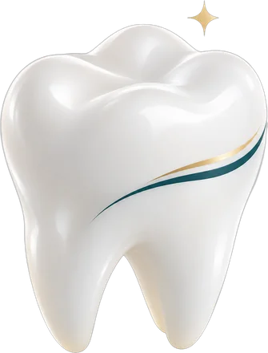
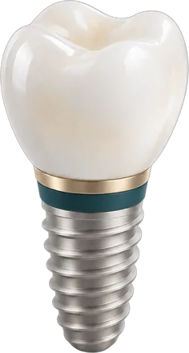
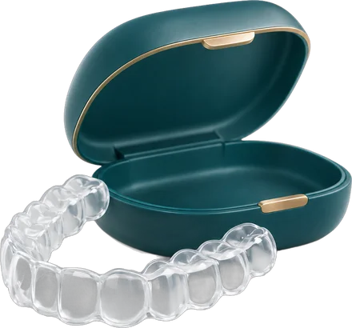
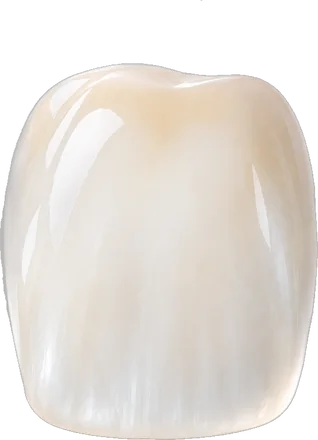
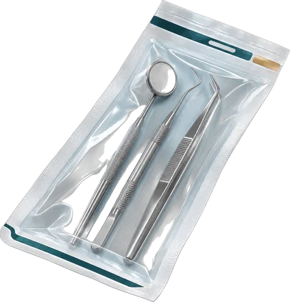

Odontologia que explica antes de tratar.
Dentistas no Centro de Belo Horizonte para clínica geral, implantes, aparelhos e estética do sorriso. Na avaliação, você vê o que foi encontrado e entende cada opção, sem pressa.
- 4,9 no Googleexemplo
- Seg a sáb, com hora marcada
Responsável técnica: Dra. Nome Sobrenome · CRO-MG 00000
Tratamentos
Do primeiro check-up ao sorriso que você quer.
Toque em um tratamento para entender como ele funciona. Na hora de agendar, a mensagem do WhatsApp já vai com o tratamento escolhido.
-

Check-up e prevençãoClínica geral
Limpeza, restaurações e acompanhamento. O ponto de partida para quem está há um tempo sem ir ao dentista.
-

Repor dentesImplantes
Para quem perdeu um ou mais dentes: um pino de titânio no osso e uma coroa em porcelana por cima.
-

Alinhar o sorrisoAparelhos e alinhadores
Aparelho fixo ou alinhador transparente. Na avaliação o dentista explica qual faz sentido para o seu caso.
-

Clareamento e lentesEstética do sorriso
Clareamento, lentes e facetas, planejados para combinar com o formato do seu rosto e do seu sorriso.

Instrumentais esterilizados em autoclave. Cada kit vem em embalagem lacrada, aberta na sua frente.
Como funciona
Do primeiro oi no WhatsApp ao plano na sua mão.
Muita gente adia o dentista por não saber o que vai acontecer na cadeira. Aqui cada passo é combinado com você antes.
- Pelo celular
Você manda uma mensagem
Texto, áudio ou foto. Não precisa saber o nome do tratamento.
- Hora marcada
Escolhe o horário
A recepção oferece os horários livres e manda a localização.
- Com imagens
Faz a avaliação
O dentista examina, faz as imagens necessárias e mostra na tela o que encontrou.
- Por escrito
Recebe o plano
Com as etapas e o tempo de cada uma. Você leva para casa e decide com calma.
Quem vai cuidar de você
“Ninguém deveria sair do dentista sem entender o que foi feito.”
Foi com essa ideia que a Lume nasceu. Aqui a avaliação é uma conversa: você vê as imagens, entende as opções e decide no seu tempo. Sem pressa e sem tratamento empurrado.
- Formação
- Odontologia, Universidade Exemplo exemplo
- Especialidade
- Implantodontia · RQE 0000 exemplo
- Na Lume desde
- 2015 exemplo
Avaliações
Quem já passou pela cadeira conta.
Nota média no Google, com 000 avaliações exemplo
Ver todas no GoogleTinha pavor de dentista e adiei anos. Na avaliação a doutora me mostrou tudo na tela antes de fazer qualquer coisa. Saí sabendo exatamente o que ia acontecer.
Fiz implante de um dente do fundo. Cada etapa foi explicada e o plano veio por escrito, com o tempo de cada fase. Nada de surpresa no meio do caminho.
Marquei pelo WhatsApp numa terça à noite e na quinta já estava sendo atendida. Pontuais e muito educados desde a recepção.
Levei meu filho de 8 anos e ele saiu querendo voltar. Paciência de verdade com criança.
Fiz clareamento e a dentista explicou o que esperar, inclusive a sensibilidade. Gostei da honestidade.
Consultório limpo, embalagem dos instrumentos aberta na minha frente. Isso me deixou tranquilo.
Arraste para o lado ou use as setas
Dúvidas
O que todo mundo pergunta antes da primeira consulta.
Não achou a sua? A recepção responde pelo WhatsApp, inclusive por áudio.
Perguntar no WhatsAppVocês atendem convênio?
A Lume atende particular e alguns convênios odontológicos. Mande o nome do seu plano no WhatsApp que a recepção confirma na hora.
A primeira consulta é paga?
A recepção informa o valor da avaliação pelo WhatsApp antes de você agendar, sem surpresa no dia.
Tenho medo de dentista. Como vai ser?
A primeira conversa é sem pressa e sem procedimento surpresa. Você pode pedir para pausar a qualquer momento, e tudo é explicado antes de começar. Procedimentos que precisam são feitos com anestesia.
Estou com dor. Consigo atendimento rápido?
Sim. Casos de dor têm prioridade na agenda: a recepção tenta encaixar no mesmo dia ou no dia seguinte. Escreva "estou com dor" na mensagem.
Posso levar exames antigos?
Pode e é bom levar. Radiografias, tomografias e relatórios anteriores ajudam o dentista a entender o seu histórico.
Vocês atendem crianças?
Sim. O atendimento infantil é feito com calma, explicando para a criança cada passo, e um responsável acompanha a consulta.
Como funciona a esterilização?
Os instrumentais passam por limpeza e esterilização em autoclave e ficam em embalagem lacrada, que é aberta na sua frente no início do atendimento.
Quais são as formas de pagamento?
As condições são explicadas pela recepção junto com o plano de tratamento, depois da avaliação.
Como chegar
No Centro de BH, perto de você.
Rua Exemplo, 100, sala 201Centro, Belo Horizonte, MG exemplo
- Segunda a sexta
- 8h às 19h
- Sábado
- 8h às 12h
- Domingo e feriados
- Fechado
- Estacionamento conveniado no prédio ao lado exemplo
- Acessível: prédio com elevador e rampa na entrada exemplo
Sua avaliação começa com um oi.
Mande uma mensagem agora e a recepção encontra um horário para você.